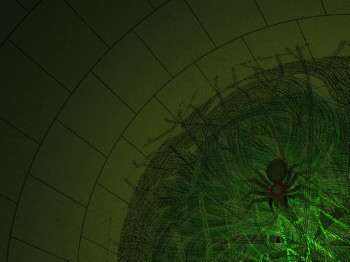
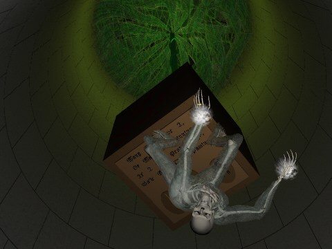
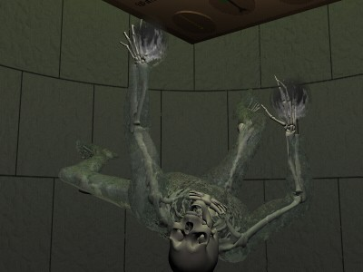

he dragon roared its impotent rage as the party retreated down the bridge,
silver key in hand. This was the first of three items from Acerak's poem. The group immediately set
out for the tower containing the riddle-box, the second item which
Rosvenir's Dream spell had also
located. Reaching the riddle-box required retracing steps back through the
tower of the casino and down to its lower level, where a second bridge was
secured.
he dragon roared its impotent rage as the party retreated down the bridge,
silver key in hand. This was the first of three items from Acerak's poem. The group immediately set
out for the tower containing the riddle-box, the second item which
Rosvenir's Dream spell had also
located. Reaching the riddle-box required retracing steps back through the
tower of the casino and down to its lower level, where a second bridge was
secured.
A short span led to the next tower, which also
appeared to be empty at first. Peering inside revealed a greenish glow
emanating from below. An extensive web made of what looked like emerald was
spun across the width of the tower. The web glowed with a sickly green light,
casting eerie shadows across the walls. Strands of the web were secreted to
the wall of the tower at numerous places about its circumference,
approximately level with the entrance. The whole mass sloped downwards until
at its center the web was nearly fifty feet below its zenith.

Rosvenir's Presence spell detected fourteen minds. They
were spread out throughout the web, with the deepest being more than one
hundred feet down. A Mind Typing on that one identified it as another
Winter Wight. The rest were some sort of arachnid. A bit of rubble dredged
from the depths of the Bag of Holding and thrown into the center of the web
drew several of the spiders out. They were enormous, nearly four feet
across, with scarlet eyes completely encircling their head. Their whole
body was somewhat insubstantial, fading to nothingness in the legs. Endira
identified them as a Wraith Spider, a form of Undead arachnid.
One of the spiders which emerged was quickly dispatched by a
spell from Mystical. The rest of the party cast various magics to prepare
for battle. Feeling confident, Kurik cast Fly and maneuvered out to
the exact center of the web. Touching down, he prepared to draw the spiders
out. Of course, the moment he touched the web he was affected by its magic
and paralyzed. Twelve spiders scurried forth, planning to make a meal of the
paladin.
Mystical
I'm not sure but I think Kurik was dumbstruck by the size or
speed of the spiders dashing towards him, or maybe it was something about
the web. Anyhow, he just wasn't moving. My Firebolt and Rosvenir's
Starbolt fried two of them. At the time it didn't appear that more
conventional weaponry was hurting these creatures. There were just too many
of them, and they washed over Kurik. Rosvenir took to the air, which seemed
like a good idea so we could get a closer shot, so Zem and I followed. Still
they clustered around Kurik, biting him with their mandibles. In desperation
Rosvenir activated the Wand of Days. The
chamber lit up bright as day. And nothing happened. Nothing at all, the Wand
didn't phase the spiders in the slightest.
With Kurik in the mix we had to call our shots carefully.
I hit a couple of them with Firebolts, while Zem flew low
and hacked with his broadsword. Rosvenir distracted about five of them
away from Kurik, and then peppered those five with Starbolts.
They couldn't take damage as well as they could dish it out, and quickly
turned into crispy critters.
The Narrator
Two spiders managed to bite Zem. He felt extreme cold from the
wound, the opposite of Kurik (who suffered burn damage). Soon enough Kurik's
paralysis wore off, and he flew upwards out of range. Mystical then began
throwing Fireballs at the creatures, while Zem and Rosvenir sent
additional bolts of energy at them until only six badly damaged arachnids
remained. Those six dove for cover in the web.

Mystical flew down close and began to hack away at the web itself.
This enraged the remaining spiders, which flew from their hiding places and
managed to bite her severely. The party killed one of them with a volley of
missile weapons, and the rest retreated. After healing his wounds Kurik flew
back to the web to begin hacking at the hole Mystical had started. The five
remaining spiders crept in close, but did not attack. One spider lost its
footing and tried to stabilize itself with two of its legs. Unfortunately it
chose the two legs which had been whacked off in the battle, and tumbled end
over end before impaling itself on Kurik's axe. Having had enough punishment
for one day, the remaining arachnids retreated deep into the strands and
were not seen again.

Kurik cut his way down sixty, seventy, and finally eighty feet before
breaking through the bottom most layer of the emerald webbing. Zem, Mystical,
and Rosvenir joined him before passing through to the other side. Several
thick strands extended from the underside of the web to attach to a large box
nearly fifty feet below. Flying lower, the group spotted the Winter Wight
standing below the box. That is, it stood on the bottom side of the box as
though it didn't know the meaning of the word "gravity." The Wight
straightened and began to walk, still upside down, through the air towards the
adventurers. Rosvenir spotted a golden ring on the Wight's finger. Focussing
his concentration, he managed to cast Long Door Item to teleport the
ring into his own pocket. The ring was later identified as a Ring of Universal
Movement, and the lack of it caused the Wight to suddenly learn the definition
of gravity. It also got to learn the meaning of "velocity" before
plunging into the mists below.
The riddle box was nearly ten feet on a side, and painted with red symbols. It did not sound hollow when rapped on, and the thick webs securing it implied it was quite heavy. There was an inscription in the Common tongue on the bottom of the box:
Many tails have I, or, many a beginning. If I fail people sigh, wails mark their passing.Beneath the riddle were three plaques, each engraved with a picture:
Rosvenir's Dream
A creature... unlike anything I've seen. It is the only one of
its kind. Its huge, and somehow squished into a room too small to encompass
it. Huge wings folded up along its sides... protubances on the front (arms?)
are chained to the walls with golden manacles.
The vision pulls back down a hallway barred with three portcullises
in red, blue, and green. The red bars flow and form into the shape of a rope,
then dissipate.
The vision continues to pull back until it is outside in the mist.
The tower is not cylindrical, but rectangular. The tower dissolves into dust
which rebuilds itself into a cylindrical tower with rings around its girth and
a single bridge leading to it, an off-center spike gracing its top.
The vision backs away and into darkness. The sound of scurrying feet
is all around. I can't see. I must see. Fumbling to light the torch, flint
striking against steel. The shuffling feet scurry away at the sound.